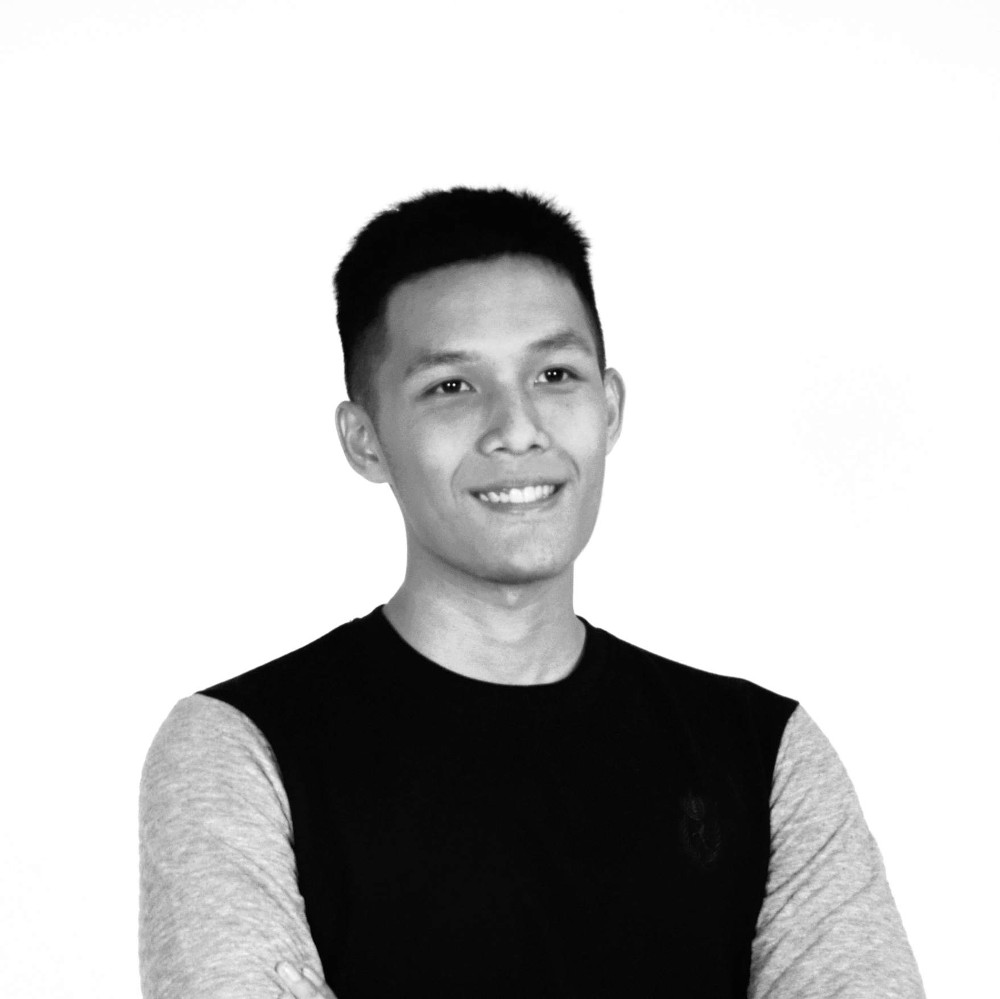

Stefanus Henry Gunawan

Summary
Graphic storyteller with 5 years of experience—and still growing. Always eager to learn, I'm currently expanding my skill set into UI/UX design and web development to become a one-stop creative solution for your brand.
Work Experience
Freelance Illustrator & Graphic Design
January 2019 - Present
Custom design works such as character illustration, branding, logo design, NFT projects, and many more.
Illustrator - Kreativv
March 2020 - August 2022
- Create a meaningful illustration for social media post, website, and promotional purpose
- Develop a storyboard illustration for a short educational video
- Coordinate with animator, copywriter, and video talent for video posts
- Manage videos uploading schedule on Youtube and TikTok
Part Time Graphic Designer - Parahyangan Catholic University (UNPAR)
February 2019 - December 2019
- Create marketing design for campus promotion
- Photo editing
- Front office work
Education
- Bachelor of Architecture - Parahyangan Catholic University (2015-2029)
Skills
- Photoshop ⭐️⭐️⭐️⭐️⭐️
- Illustrator ⭐️⭐️⭐️⭐️⭐️
- InDesign ⭐️⭐️⭐️⭐️
- Premiere ⭐️⭐️
- After Effect ⭐️
- Canva ⭐️⭐️⭐️⭐️⭐️
- Figma ⭐️⭐️⭐️⭐️
- Visual Studio Code ⭐️⭐️
Awards & Certifications
- Final Architecture Studio (SAA) Award Nominee (2019)
- Top 10 WISSEMU Poster Design Competition (2017)
- Top 8 Apron Design Competition (2017)
Other
Contact Me